Жасанды интеллект орман өрттерін спутниктерден тезірек анықтайды

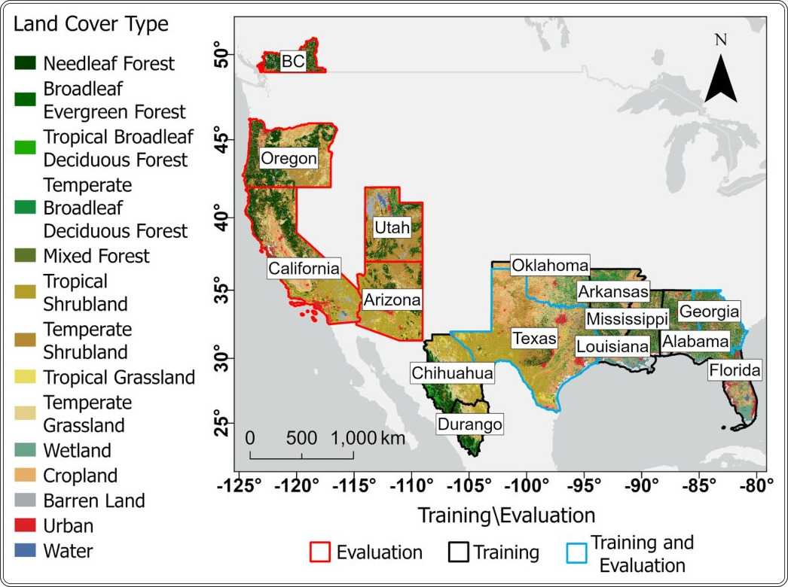
Дәстүрлі спутниктік мониторинг өрт ошақтарын жиі өткізіп алады және қате дабылдар береді. Зерттеу көрсеткендей, CatBoost машиналық оқыту моделі GOES FDC стандартты өнімінен дәлдігі мен жылдамдығы бойынша озып тұр. Жаңа тәсіл әсіресе түнгі уақытта тиімді, ал ескі алгоритмдер бұл тұрғыда өте төмен нәтиже көрсетеді.
Басты ойлар
- CatBoost дәлдік пен қамту бойынша GOES FDC-ден озып түсті
- Модель 26 өртті стандартты жүйелерден бұрын анықтады
- Түнгі уақытта анықтау тиімділігі айтарлықтай жоғары
Толығырақ
Зерттеушілер GOES спутниктеріндегі ABI аспабының деректері мен VIIRS (375 метр дәлдікпен жылу сәулеленуін тіркейтін радиометр) эталондық белгілерін пайдаланды. Оқу жиынтығы 2022–2023 жылдар аралығындағы 60 мыңнан астам өрт пикселін және 1,2 миллион «таза» пикселді қамтиды. CatBoost моделі FDC (Fire Detection and Characterization) алгоритмі ескермейтін күрделі кеңістіктік-спектрлік өрнектерді анықтауға үйретілген.
2024 жылғы бес аймақтағы тест нәтижелері модельдің F1-өлшемі (дәлдік метрикасы) FDC-ге қарағанда 0,16–0,38-ге жоғары екенін көрсетті. 51 тарихи оқиғаның 26-сында модель өртті қолданыстағы жүйелерден бұрын анықтады. Ең маңыздысы, FDC дерлік жұмыс істемейтін түнгі уақытта (recall 0,03 шамасында) нейрондық желі жоғары дәлдікті сақтап қалады.
Шектеулер
Нәтижелер тек GOES спутниктік деректерімен шектелген және аймақтық жағдайларға байланысты өзгеруі мүмкін.
Мақаланың толық талдауы
Түйіндеме
Орман өрттері адам өміріне, экожүйелерге және мүлікке елеулі қауіп төндіреді. Бұл зерттеуде GOES ABI спутниктік суреттері негізінде өрт ошақтарын анықтаудың машиналық оқыту әдісі ұсынылған. Зерттеушілер CatBoost моделін мыңдаған ABI суреттері мен VIIRS аспабы тіркеген 300 000-нан астам өрт деректері негізінде оқытты.
Түсіндірме
CatBoost — бұл шешім ағаштары негізінде градиентті күшейтуді қолданатын машиналық оқыту алгоритмі, ол кестелік деректер мен суреттермен жұмыс істеуде тиімді.
Модельдің тиімділігі бес түрлі аймақты қамтитын тәуелсіз деректер жиынтығында бағаланды. Нәтижелер CatBoost моделінің қазіргі GOES Fire Detection and Characterization (FDC) өнімінен дәлдік (precision), толықтық (recall) және F1-өлшемі бойынша басым екенін көрсетті. Барлық зерттелген аймақтарда CatBoost моделінің F1-өлшемі FDC-ден 0,16–0,38-ге жоғары болды.
Маңызды
CatBoost моделі стандартты FDC өнімінен 0,16–0,38-ге жоғары F1-өлшеміне қол жеткізді және 26 өртті басқа жүйелерден ертерек анықтады.
51 тарихи өрт оқиғасын талдау анықтау жылдамдығындағы артықшылықты көрсетті: CatBoost 26 өртті VIIRS және GOES FDC жүйелерінен бұрын тіркеді, ал FDC мұны тек 6 жағдайда ғана орындай алды. Түнгі уақытта өртті анықтауға ерекше назар аударылды: CatBoost моделі түнде де жоғары дәлдікті сақтайды, ал GOES FDC жүйесінің толықтық (recall) көрсеткіші түнде 0,03 шамасында ғана болады.
Абайлаңыз
Зерттеу алгоритмдерді салыстыруға негізделген; нәтижелер спутниктік деректердің ерекшеліктері мен аймақтық жағдайларға байланысты болуы мүмкін.
Кіріспе
Орман өрттерін мониторингтеудің өзектілігі
Орман өрттері экожүйелерге, инфрақұрылымға және адам өміріне елеулі қауіп төндіреді. Мәселе ауқымы кеңейіп келеді: 1980–2023 жылдар аралығында өрттен туындаған ірі апаттардың жиілігі төрт есеге артты. 2025 жылдың қаңтарында Лос-Анджелесте болған «Palisades Fire» өрті бұған айқын мысал: 24 күн ішінде 95 км² жер өртеніп, 6800-ден астам құрылыс қирады және 12 адам қаза тапты.
Маңызды
1980–2023 жылдар аралығында ірі орман өрттерінің жиілігі 4 есеге өсті, бұл өртті дер кезінде анықтауды апаттардың алдын алу үшін өте маңызды міндетке айналдырады.
Өрт ошақтарын ерте анықтау үшін геостационарлық (GEO) жерсеріктер кеңінен қолданылады. Жердің айналуымен синхрондалған орбитасының арқасында олар бір аймақты әр 5–15 минут сайын бақылай алады. GOES жерсеріктеріне арналған FDC және Meteosat үшін FRP-PIXEL сияқты қолданыстағы алгоритмдер жарықтық шектеріне сүйенеді. Алайда, олардың кемшіліктері бар: FDC алгоритмі көбінесе 3,7 мкм диапазонында көрінетін өрттерді өткізіп алады, сондай-ақ екі әдіс те жалған дабылдардың (false alarms) жоғары деңгейін көрсетеді.
Машиналық оқыту (ML) тәсілі
Болашағы зор шешім — күрделі кеңістіктік-спектрлік заңдылықтарды анықтауға қабілетті машиналық оқыту (ML) алгоритмдерін қолдану. Мұндай модельдерді оқыту үшін әрбір пиксель «өрт» немесе «өрт емес» деп белгіленген деректер жиынтығы қажет. Бұған төмен орбитадағы (LEO) жерсеріктердің деректері немесе орман шаруашылығының есептері негіз болады.
Түсіндірме
Машиналық оқыту — бұл деректерді талдау әдісі, мұнда алгоритм қатаң ережелерді орындаудың орнына, үлкен көлемдегі мысалдар негізінде (мысалы, өрттің спектрлік белгілері) заңдылықтарды дербес «үйренеді».
Бұрынғы зерттеулерде Random Forest және CNN сияқты терең оқыту әдістері қолданылған. Алайда, қазіргі модельдер шағын оқу жиынтықтары (бірнеше жүз пиксель), тар географиялық қамту және операциялық алгоритмдермен салыстырылмауы сияқты шектеулерге ие. Сондай-ақ, модельдердің күндізгі және түнгі жұмыс тиімділігі сирек жағдайларда ғана бөлек бағаланады.
Зерттеу мақсаттары мен әдіснамасы
Бұл жұмыстың мақсаты — GOES FDC өнімінен дәлдік және жалған дабылдар деңгейі бойынша озық ML моделін жасау. Авторлар 60 000-нан астам өрт пиксельдері мен 1,2 миллионға жуық өрт емес пиксельдерді қамтитын деректер базасын пайдаланды. VIIRS (LEO) аспабының деректері эталон ретінде қабылданды. Оқыту 2022–2023 жылдардағы деректер негізінде, ал бағалау 2024 жылғы деректер негізінде жүзеге асырылды, бұл модельдің жаңа уақыт пен кеңістік жағдайларына бейімделу қабілетін бағалауға мүмкіндік берді.
Абайлаңыз
Модель 2022–2023 жылдардағы деректерде оқытылып, 2024 жылғы деректерде сынақтан өтті; нәтижелер ақиқат деп қабылданған VIIRS эталондық деректерінің сапасына байланысты.
2. Зерттеу аймағы және дереккөздер
Бұл бөлімде талданған аймақтар және олар үшін алынған спутниктік суреттер сипатталған. Суреттер GEOfire анықтауға арналған ML моделін оқыту және бағалау үшін қолданылды. Сонымен қатар, ML моделінің ерте анықтау қабілетін GOES FDC өнімімен салыстыру үшін арнайы өрт оқиғаларының жиынтығы жасалды.
2.1. Зерттеу аймағы
Зерттеу аймағы АҚШ, Мексика және Канаданың әртүрлі ландшафт түрлерін (ормандар, батпақтар, шөлдер, ауыл шаруашылығы және қалалық аймақтар) қамтиды (1-сурет). Аймақтар оқыту (шамамен 2,1 млн км²) және бағалау (шамамен 2 млн км²) үшін бөлінген. Флорида, Алабама, Миссисипи, Луизиана, Оклахома, сондай-ақ Мексиканың Чиуауа және Дуранго штаттары тек оқыту үшін; Техас пен Джорджия оқыту және бағалау үшін; ал Калифорния, Орегон, Аризона, Юта және Британдық Колумбияның бір бөлігі тек бағалау үшін пайдаланылды.
Маңызды
Зерттеудің жалпы ауданы шамамен 4,1 млн км² құрайды, ол оқыту және сынақ аймақтарына бөлінген.
2.2. Дереккөздер
Оқыту және бағалау жиынтықтары бірдей құрылымға ие және VIIRS өрт анықтаулары мен ±2,5 минут аралығында алынған GOES ABI суреттерін қамтиды. Оқыту жиынтығы 2022–2023 жылдардағы барлық VIIRS деректерін (324 502 анықтау және 4 330 GOES ABI суреті) қамтиды. Бағалау жиынтығы 2024 жылғы деректерге негізделген (1-кесте).
Түсіндірме
VIIRS — Suomi NPP спутниктеріндегі радиометр, ол 375 м ажыратымдылықпен термиялық ауытқуларды тіркейді.
2.2.1. VIIRS белсенді өрт өнімі
Эталон ретінде VNP14IMG Collection 2 өнімі қолданылды. Ол координаттарды, уақытты, өрттің сәулелену қуатын (FRP) және сенімділік деңгейін ұсынады. Сенімділігі төмен пикселдер талдаудан шығарылды. Деректер NASA LAADS DAAC мұрағатынан алынды.
2.2.2. GOES ABI суреттері
2 км ажыратымдылықтағы үш өнім жүктелді: көп арналы бұлт және ылғалдылық суреттері (MCMI), бұлтсыз аспан маскасы (ACM) және FDC. MCMI және ACM модель үшін кіріс деректері, ал FDC салыстыру үшін эталон болып табылады. FDC термиялық ауытқуларды анықтау үшін инфрақызыл диапазондарды пайдаланады. Ерте анықтау талдауы (4.4-бөлім) екі рет жүргізілді: алдымен «өңделген» және «қаныққан» санаттармен, содан кейін «жоғары сенімділік» санаты қосылды.
Абайлаңыз
«Жоғары сенімділік» санатын пайдалану жалған дабылдар (false alarm) қаупін арттырады, бұл дәлдікті бағалау кезінде ескерілді.
2.2.3. Ерте анықтау үшін өрт периметрі деректері
ML моделі мен GOES FDC мүмкіндіктерін салыстыру үшін 51 өрт оқиғасы бойынша деректер жиынтығы жасалды. Периметрлер АҚШ-тағы орман өрттерінің шекараларын көрсететін WFIGS деректер базасынан алынды.
Нәтижелер
Кесте 3. Өрт оқиғаларының жиынтығы
| Өрт оқиғасы | Өртті алғашқы анықтау | Уақыт айырмашылығы (минут) |
|---|---|---|
| Beech | CatBoost | 300 |
| Bentley | CatBoost | 480 |
| Davis | CatBoost | 445 |
| Smokehouse Creek | CatBoost | 245 |
| Airport | VIIRS | No CatBoost detection |
| Blue Mountain | VIIRS | No CatBoost detection |
| Boise | VIIRS | No CatBoost detection |
| Dry Branch | VIIRS | No CatBoost detection |
| Duck Nest | VIIRS | No CatBoost detection |
| Fall Branch | VIIRS | No CatBoost detection |
| Fodderstack | VIIRS | No CatBoost detection |
| Foote | VIIRS | No CatBoost detection |
| Walker | VIIRS | No CatBoost detection |
(1) Тек CatBoost және VIIRS; (2) Тек VIIRS.
CatBoost тиімділігін GOES FDC-мен салыстыру
CatBoost моделі барлық бес зерттеу аймағында (Джорджия, Техас, Калифорния-Орегон, Аризона-Юта және Британдық Колумбия) GOES FDC өнімімен толықтық (recall), дәлдік (precision) және F1-ұпайы бойынша салыстырылды. CatBoost барлық көрсеткіштер бойынша басымдық танытып, анықтау деңгейін сақтай отырып, жалған дабылдар санын азайтты. Оқыту кезінде қолданылмаған аймақтарда (Калифорния-Орегон, Аризона-Юта, Британдық Колумбия) модель жоғары бейімделгіштік көрсетіп, F1-ұпайы бойынша GOES FDC-ден 0,16–0,38-ге озып кетті.
Маңызды
CatBoost барлық аймақтарда, соның ішінде оқытуда қолданылмаған аймақтарда да GOES FDC-ден тұрақты басымдыққа ие (F1-ұпайы бойынша 0,38-ге дейін).
Нақты оқиғаларды талдау (7-сурет) Техастағы жалған дабыл нақты ошаққа жақын жерде болғанын көрсетті, бұл жылу әсерімен байланысты болуы мүмкін. Джорджияда модель VIIRS датчиктерімен тек бір рет қана тіркелген шағын ошақтарды өткізіп алды.
Абайлаңыз
Бағалау VIIRS өнімімен салыстыруға негізделген; модельдегі кемшіліктер спутниктік деректердің кеңістіктік ажыратымдылығының шектеулеріне байланысты болуы мүмкін.
Кесте S1. Алғашқы анықтауды салыстыру үшін пайдаланылған 51 тарихи өрт оқиғасының жиынтығы
| ID | Өрт оқиғасы | VIIRS алғашқы анықтау уақыты (UTC) | Штат | Бойлық | Ендік | Өрт көлемі (км²) |
|---|---|---|---|---|---|---|
| 1 | Area 6 | 28/1/2021 17:41 | Florida | -81.268 | 27.682 | 17.5 |
| 2 | Windmill | 2/3/2021 19:06 | Oklahoma | -97.265 | 34.398 | 189.2 |
| 3 | CP-3 | 3/3/2021 18:41 | Florida | -80.993 | 25.263 | 356.6 |
| 4 | Dry Branch | 5/3/2021 6:46 | Alabama | -85.564 | 33.873 | 5.3 |
| 5 | Pear Orchard | 6/3/2021 17:46 | Georgia | -83.41 | 34.537 | 9.6 |
| 6 | Davis | 7/3/2021 7:51 | Mississippi | -89.176 | 31.128 | 9 |
| 7 | Melder One | 7/3/2021 19:11 | Lousiana | -92.557 | 31.103 | 13.9 |
| 8 | Narrows | 7/3/2021 19:11 | Georgia | -85.24 | 34.537 | 0.8 |
| 9 | Mt Wiesner | 7/3/2021 19:11 | Alabama | -85.687 | 34.018 | 11 |
| 10 | Blue Barrel | 10/3/2021 18:11 | Florida | -86.854 | 30.494 | 17.2 |
| 11 | King | 18/3/2021 7:46 | Texas | -98.071 | 26.898 | 54.4 |
| 12 | Addington | 19/3/2021 18:46 | Oklahoma | -97.917 | 34.293 | 15 |
| 13 | Bentley | 26/3/2021 8:36 | Lousiana | -92.527 | 31.547 | 4.1 |
| 14 | Candy Creek | 28/3/2021 8:01 | Oklahoma | -96.071 | 36.563 | 114.7 |
| 15 | Blue Mountain | 28/3/2021 19:16 | Oklahoma | -94.837 | 34.835 | 14.4 |
| 16 | Tour Road North | 29/3/2021 19:01 | Arkansas | -94.04 | 36.465 | 5.3 |
| 17 | Oscar Ashton Road | 17/5/2021 18:36 | Florida | -81.522 | 29.89 | 3.6 |
| 18 | Weeping Willow | 19/5/2021 6:46 | Florida | -81.972 | 27.703 | 8.9 |
| 19 | Bobcat | 29/5/2021 18:11 | Florida | -80.737 | 26.384 | 155.2 |
| 20 | Rare | 11/6/2021 19:11 | Florida | -82.381 | 30.374 | 18.1 |
| 21 | Buck | 28/10/2021 20:46 | Texas | -99.405 | 32.986 | 107.6 |
| 22 | Fall Branch | 19/11/2021 18:51 | Alabama | -85.792 | 33.466 | 4.4 |
| 23 | Duck Nest | 19/11/2021 18:51 | Alabama | -85.822 | 33.49 | 2.3 |
| 24 | Fodderstack | 27/11/2021 8:21 | Arkansas | -93.951 | 34.361 | 12 |
| 25 | Tower Hills | 5/12/2021 20:36 | Oklahoma | -96.538 | 36.703 | 10.7 |
| 26 | Cobb | 15/12/2021 19:06 | Oklahoma | -101.607 | 36.694 | 42.6 |
| 27 | Walker | 22/2/2024 19:21 | Oklahoma | -94.517 | 34.827 | 11.9 |
| 28 | Leaf | 24/2/2024 18:46 | Mississippi | -88.814 | 31.014 | 9.6 |
| 29 | CMPT 270 | 24/2/2024 18:46 | Mississippi | -89.577 | 32.11 | 1.3 |
| 30 | Wired Grass | 26/2/2024 8:31 | Alabama | -86.159 | 33.183 | 0.5 |
| 31 | Smokehouse Creek | 26/2/2024 8:31 | Texas | -100.666 | 35.837 | 6505 |
| 32 | Zink | 14/3/2024 8:11 | Oklahoma | -96.28 | 36.32 | 50.6 |
| 33 | Bell Spring | 29/3/2024 6:51 | Alabama | -85.892 | 33.523 | 5.3 |
| 34 | Howell | 4/4/2024 19:41 | Oklahoma | -96.323 | 36.52 | 13.8 |
| 35 | Hinson | 5/4/2024 17:36 | Florida | -81.508 | 29.069 | 12.5 |
| 36 | Foote | 12/6/2024 8:21 | Arizona | -109.203 | 33.654 | 26.7 |
| 37 | Sites | 17/6/2024 21:31 | California | -122.437 | 39.267 | 129.7 |
| 38 | Blue Stem | 1/7/2024 7:31 | Texas | -95.276 | 29.113 | 12.9 |
| 39 | Silver King | 5/7/2024 20:51 | Utah | -112.331 | 38.441 | 124.2 |
| 40 | Deer Springs | 7/7/2024 20:16 | Utah | -112.267 | 37.241 | 75.3 |
| 41 | Boise | 9/8/2024 10:16 | California | -123.473 | 41.248 | 94.2 |
| 42 | Wiley Flat | 3/9/2024 10:46 | Oregon | -120.28 | 44.055 | 236.6 |
| 43 | Boone | 3/9/2024 20:31 | California | -120.582 | 36.173 | 109.5 |
| 44 | Line | 6/9/2024 9:51 | California | -117.066 | 34.16 | 265.9 |
| 45 | Airport | 8/9/2024 9:16 | California | -117.493 | 33.662 | 137.9 |
| 46 | Carson Six | 16/10/2024 18:41 | Mississippi | -89.055 | 30.541 | 7.4 |
| 47 | Rush | 25/10/2024 7:51 | Oklahoma | -98.632 | 34.748 | 74.9 |
| 48 | North Road | 29/10/2024 19:36 | Oklahoma | -96.341 | 36.629 | 23.9 |
| 49 | Beech | 2/12/2024 7:41 | Oklahoma | -94.494 | 34.61 | 1.3 |
| 50 | Middleton | 16/2/2025 18:36 | Texas | -94.395 | 29.619 | 16.6 |
| 51 | Two Barrel | 26/2/2025 18:46 | Florida | -85.001 | 30.185 | 6.3 |
Кестеде өрт атауы, VIIRS алғашқы анықтау уақыты, штат, центроид координаттары (ендік пен бойлық) және өрт көлемі (км²-мен) көрсетілген.
Оқыту деректер жиыны көлемінің CatBoost жұмысына әсері
Деректер көлемінің маңыздылығын көрсету үшін авторлар негізгі модельді (66 000 өрт пикселі) екі кішірек нұсқамен салыстырды: кездейсоқ таңдама (2 000 өрт және 20 000 фондық пиксель) және тек сәуір-мамыр айларының деректері. Нәтижелер (9-сурет) кішігірім немесе маусымдық шектелген таңдамалар жалған дабылдар санын арттыратынын көрсетеді. Мысалы, Аризона-Ютада негізгі модельдің дәлдігі 0,81 болса, кіші модельдерде бұл көрсеткіш 0,50 және 0,42-ге дейін төмендеді. Толықтық (recall) көрсеткіші тұрақтырақ болғанымен, тек көктемгі деректерде оқытылған модель Джорджияда төмен нәтиже (0,21) көрсетті.
Түсіндірме
F1-ұпайы — бұл дәлдік пен толықтық арасындағы гармоникалық орташа мән, ол мақсаттарды өткізіп алу мен жалған дабылдар арасындағы тепе-теңдікті бағалауға көмектеседі.
Кең және әртүрлі деректер жиынын пайдалану модельдің жалпылау қабілеті үшін өте маңызды. Деректер көлемі аз модельдер оқыту аймағынан тыс жерлерде нашар жұмыс істейді, бұл қателіктерді азайту үшін өкілдік қамтудың қажеттілігін растайды.
Ерте анықтау мүмкіндіктері
Өртті ерте анықтау олардың ауқымды апатқа айналуының алдын алуда маңызды рөл атқарады. CatBoost моделінің GOES FDC өнімімен салыстыру үшін 51 өрт оқиғасынан тұратын деректер жиынтығы құрылды. Талдау VIIRS жерсерігі өртті тіркегенге дейінгі 8 сағатты және кейінгі 2 сағатты қамтыды. Әрбір оқиға үшін кескіндер өрт периметрі айналасында 10 км буфермен қиылып, CatBoost пен GOES FDC арасындағы алғашқы анықтау уақыты (минутпен) есептелді.
Маңызды
CatBoost моделі ерте анықтауда басымдық көрсетті: бірінші сценарийде ол 22 өртті GOES FDC-ге қарағанда ертерек (орташа есеппен 20 ± 17 минут) анықтады, ал GOES FDC тек 6 жағдайда модельден озып кетті.
10-суретте VIIRS тіркегенге дейін екі әдіспен де анықталған 38 өрттің нәтижелері көрсетілген. Бірінші талдау нұсқасында (тек «processed» және «saturated» санаттары) CatBoost орташа 20 минут (стандартты ауытқу 17 минут) ерте анықтауды көрсетті. Екінші нұсқада, «high confidence» санаты қосылған кезде, CatBoost 19 өртті (орташа 18 ± 16 минут) ертерек анықтады, ал GOES FDC 9 жағдайда ертерек жұмыс істеді. 10 жағдайда әдістер бір уақытта тіркелді.
Абайлаңыз
GOES FDC-де «high confidence» санатын пайдалану сезімталдықты арттырады, бірақ бұл жалған дабылдар (false alarms) санының көбеюіне әкелуі мүмкін.
Howell, Blue Stem, Candy Creek және Silver King сияқты жекелеген жағдайлар «high confidence» санатын қосу GOES FDC-ге кейде модельден бұрын өртті анықтауға мүмкіндік беретінін көрсетеді. Мысалы, Candy Creek өртінде FDC моделі CatBoost-тен 30 минут бұрын жұмыс істеді. Дегенмен, жалпы алғанда 51 оқиғаның ішінде CatBoost 26 (бірінші талдауда) және 23 (екінші талдауда) өртті басқа жүйелерден бұрын анықтап, ерте анықтау тиімділігін растады.
Өртті анықтау ықтималдығы
Бұл бөлім VIIRS деректерімен 3×3 пиксель терезесінде салыстыру арқылы әдістердің өрт көлеміне қатысты сезімталдығын бағалайды. Бағалау үшін (5), (6) және (7)-теңдеулер қолданылды, мұнда NTP,k — шынайы оң нәтижелер саны (кемінде k VIIRS пикселі болған кезде модель арқылы анықтау), ал NFN,k — жалған теріс нәтижелер саны.
Түсіндірме
Әдіс кеңістіктік белгісіздікті ескеру үшін 3×3 терезені пайдаланады: егер модель VIIRS деректерінен бір пиксель радиусында өртті тіркесе, бұл сәтті анықтау болып саналады.
Анықтау ықтималдығы сәтті анықталған пикселдер санының кемінде k VIIRS анықтауын қамтитын жалпы пикселдер санына қатынасы ретінде есептелді. Бұл тәсіл алгоритмдердің әртүрлі қарқындылықтағы және аумақтағы өрттерге қаншалықты тиімді жауап беретінін бағалауға мүмкіндік береді.
Өртті анықтау ықтималдығы
Авторлар CatBoost моделінің өртті анықтау ықтималдығын GOES FDC алгоритмімен салыстыра отырып бағалайды. Ол үшін (8)-формула қолданылады, мұнда P(M(i', j') = 1 / V(i, j) ≥ k) өрнегі k шекті мәні үшін шынайы оң нәтижелердің шынайы оң және жалған теріс нәтижелер қосындысына қатынасын білдіреді. k шегі бір GOES ABI пикселінің ішіндегі VIIRS жерсерігі арқылы тіркелген өрттердің ең аз санын анықтайды.
Маңызды
CatBoost моделі барлық бес зерттеу аймағында GOES FDC-ге қарағанда шағын өрт ошақтарына жоғары сезімталдықты көрсетеді.
11-суретте бес аймақ: Джорджия, Техас, Калифорния-Орегон, Аризона-Юта және Британдық Колумбия бойынша нәтижелер келтірілген. Калифорния-Орегон, Аризона-Юта және Британдық Колумбияда CatBoost әлдеқайда жоғары анықтау ықтималдығын көрсетеді. Мысалы, Калифорния мен Орегонда k=1 болғанда, GOES FDC үшін ықтималдық 0,28-ді, ал CatBoost үшін 0,46-ны құрайды. k=5 шегінде айырмашылық арта түседі: CatBoost-та 0,78, ал GOES FDC-де небәрі 0,48.
Түсіндірме
VIIRS — кеңістіктік ажыратымдылығы жоғары жерсеріктік радиометр, ол GOES деректерін тексеру үшін «эталон» ретінде пайдаланылады.
Техаста CatBoost k=10-нан төмен шектерде GOES FDC-ден басым түседі. Алайда k=10 болғанда, GOES FDC ықтималдығы CatBoost моделінікінен асып кетеді. Авторлар мұны таңдама көлемінің өте аздығымен түсіндіреді: бұл аймақта он және одан да көп VIIRS өрт белгілерін қамтитын небәрі сегіз ABI пикселі тіркелген. Жалпы алғанда, CatBoost моделі шағын өрттерге қатысты тұрақты жоғары сезімталдықты көрсетеді, бұл оны көптеген жағдайларда өртті ерте анықтау үшін тиімдірек құралға айналдырады.
Абайлаңыз
Шектеу: Техастағы k-ның жоғары мәндері үшін алынған нәтижелер өте аз бақылау санымен шектелген, бұл осы нақты шек үшін статистикалық сенімділікті төмендетеді.
5. Талқылау және қорытындылар
Бұл зерттеуде GOES-16 ABI спутниктік суреттерінің үлкен деректер жиыны негізінде орман өрттерін анықтау үшін CatBoost моделі оқытылды. CatBoost градиенттік бустинг фреймворкі өзінің тиімділігі мен оқытудың қарапайымдылығы үшін таңдалды. Оқыту және бағалау үшін VIIRS өрт деректері эталон ретінде пайдаланылды. Нәтижелер CatBoost моделі зерттеуге алынған барлық бес аймақта GOES FDC стандартты өнімінен асып түсетінін, яғни дәлдік (precision), толықтық (recall) және F1-өлшемі бойынша жоғары көрсеткіштерге ие екенін көрсетеді.
Маңызды
CatBoost моделі өртті анықтауда, әсіресе түнгі уақытта, GOES FDC өніміне қарағанда тұрақты және жоғары нәтижелер көрсетті.
Екі модельде де толықтық көрсеткіштерінің салыстырмалы түрде төмен болуы ABI-дің VIIRS-ке қарағанда кеңістіктік ажыратымдылығының төмендігімен түсіндіріледі: VIIRS анықтаған шағын өрт ошақтары көбінесе қате теріс нәтиже ретінде жіктелді. Дегенмен, CatBoost GOES FDC-ге қарағанда жақсы нәтиже берді. Модельдің жалпылау қабілеті оқыту процесіне қатыспаған аймақтарда (Калифорния, Орегон, Аризона, Юта, Британдық Колумбия) тиімді жұмыс істеуімен расталды.
Түсіндірме
Толықтық (recall) — модель анықтаған нақты өрттердің үлесі. Төмен көрсеткіш модельдің көптеген өртті байқамай қалғанын білдіреді.
Күндізгі және түнгі жұмысты салыстыру айтарлықтай айырмашылықтарды көрсетті: CatBoost түнде де сенімді жұмыс істеуді сақтап қалса, GOES FDC-дің толықтық көрсеткіші нөлге жақындады. Қосымша талдаулар шағын көлемдегі деректерде (мысалы, 2000 өрт пикселі) оқытылған модельдер қате сигналдар санын арттыратынын және жаңа аумақтарда жұмыс істеу қабілетін төмендететінін көрсетті.
Абайлаңыз
Зерттеу тек Солтүстік Америка аумақтарымен шектелген және тек VIIRS деректерімен салыстырылған, бұл басқа жоғары ажыратымдылықтағы дереккөздерді ескермейді.
Авторлар бұл жұмыс Zhao және Ban (2022) зерттеулерін кеңейтіп, жекелеген өрт оқиғаларын емес, ірі географиялық аймақтарды қамтитынын және GOES FDC-мен тікелей салыстырылатынын атап өтті. Шектеулер қатарына толық дискілік суреттерде сынақ өткізілмегені және тек бір модель (CatBoost) қолданылғаны жатады. Дегенмен, нәтижелер машиналық оқытудың өрт мониторингін жақсартуға және қате сигналдарды азайтуға мүмкіндік беретінін растайды.
Әдістер
Өртті анықтау алгоритмі
Машиналық оқыту алгоритмін әзірлеу процесі төрт кезеңнен тұрады: VIIRS деректерін GOES ABI торына кеңістіктік сәйкестендіру, таңбаланған деректер жинағын құру, модельді оқыту және оны бағалау. Модель коды мен мысал деректер авторлардың репозиторийінде қолжетімді.
VIIRS өртті анықтау деректерін GOES ABI торына тағайындау
VIIRS және GOES ABI аспаптарының кеңістіктік ажыратымдылығы әртүрлі болғандықтан, VIIRS өрт ошақтарының центроидтары GOES ABI торына растрланды. VIIRS деректерімен қиылыспайтын пикселдерге 0 мәні берілді. Растрлау үшін Rasterio кітапханасы қолданылды. Сондай-ақ, сканерлеу кезіндегі «көбелек эффектісі» (bowtie effect) салдарынан туындайтын қайталанбалы пикселдер авторлар сипаттаған әдіс арқылы тазартылды.
Түсіндірме
«Көбелек эффектісі» — бұл спутниктік сканерлеу кезінде байқалатын, кескіннің шеттерінде пикселдердің қабаттасуына әкелетін техникалық бұрмалау.
Таңбаланған деректер жинағын құру
GOES ABI пикселдерін «өрт» немесе «өрт емес» деп белгілеуде спутниктер арасындағы бірнеше шақырымға жетуі мүмкін кеңістіктік сәйкессіздік ескерілді. Бұл қатені түзету үшін әрбір VIIRS өрт нүктесінің айналасында 3×3 буферлік терезе қолданылды. Осы терезе ішінде өрт индексі (Fire Index, FI) ең жоғары GOES ABI пикселі «өрт» деп белгіленді. FI индексі FI = \fracB3.9 - B11.2B3.9 + B11.2 формуласы бойынша есептеледі, мұнда B3.9 және B11.2 сәйкесінше 3.9 және 11.2 мкм толқын ұзындығындағы жарықтық температуралары.
Түсіндірме
Өрт индексі (FI) қысқа толқынды және жылулық инфрақызыл арналар арасындағы айырмашылықты пайдаланады, себебі біріншісі жоғары температуралы өрт ошақтарына сезімтал.
«Өрт емес» сыныбын құру үшін әр кескіннен өрт аймақтарына жақын емес 500 пиксел таңдап алынды. Әр пиксел үшін 16 спектрлік арна мен FI мәндері алынды, сондай-ақ 3×3 терезе ішіндегі 17 параметр үшін статистикалық көрсеткіштер (орташа, медиана, мин, макс, стандартты ауытқу) есептелді. Бұл оқыту үшін 102 белгіні берді. Бұлттармен жабылған пикселдер есептен шығарылды.
GOES ABI анықтай алмайтын ұсақ өрттерді сүзгіден өткізу үшін мынадай өлшемдер қолданылды: 3×3 терезеде кемінде 2 VIIRS өртін анықтау және FI > 0 болуы. Сыныптардағы теңгерімсіздікті (өрт емес пикселдердің көптігі) жою үшін өрт және өрт емес пикселдер арасында 1:20 қатынасы белгіленді, бұл ең жақсы F1-көрсеткішін қамтамасыз етті. Сүзгіден өткеннен кейін қорытынды жинақ 65 877 өрт және 1 317 540 өрт емес пикселді қамтыды.
Модельді оқыту
Өртті анықтау үшін CatBoost алгоритмі қолданылды. Бұл шешім ағаштары үстіндегі градиенттік бустинг әдісіне негізделген модель. Классикалық тәсілдерден айырмашылығы, CatBoost реттелген бустинг (ordered boosting), санаттық белгілерді автоматты өңдеу және «oblivious» (ұмытпайтын) ағаштар құрылымы арқылы модельдің шамадан тыс бейімделуі (overfitting) мен деректердің ағып кетуіне жол бермейді. Оқу деректер жиыны 80% оқытуға және 20% валидацияға бөлінді.
Түсіндірме
CatBoost — бұл машиналық оқыту алгоритмі, ол дәйекті түрде шешім ағаштарын құрады, мұнда әрбір келесі ағаш алдыңғысының қателерін түзетеді, бұл күрделі дайындықсыз тиімді жұмыс істеуге мүмкіндік береді.
Өртті анықтау алгоритмінің дәлдігін бағалау
Алгоритм дәлдігін бағалауда GOES ABI және VIIRS спутниктік деректері арасындағы кеңістіктік сәйкессіздіктер ескерілді. Егер алгоритм (i, j) пикселінде өртті болжаса және бұл пиксел айналасындағы 3 × 3 терезеде кемінде бір VIIRS анықтауы болса, нәтиже ақиқат оң (TP) деп жіктеледі. Әйтпесе, пиксел қате оң (FP) болып саналады. Егер VIIRS анықтауы айналасындағы 3 × 3 терезеде модель болжамы болмаса, пиксел қате теріс (FN) деп белгіленеді. Сәйкестендіру процесі 5-суретте көрсетілген.
Кескінді жіктеу сапасын бағалау үшін recall (толықтық), precision (дәлдік) және F1-өлшем көрсеткіштері пайдаланылады. Толықтық дұрыс анықталған өрттер үлесін, дәлдік модель белгілеген барлық жағдайлар ішіндегі дұрыс жауаптар үлесін көрсетеді. F1-өлшем олардың гармоникалық орташа мәні болып табылады. Есептеулер (2), (3) және (4) формулалар бойынша бүкіл кескіндер жиыны үшін TPtotal, FPtotal және FNtotal жиынтықтары негізінде жүзеге асырылады.

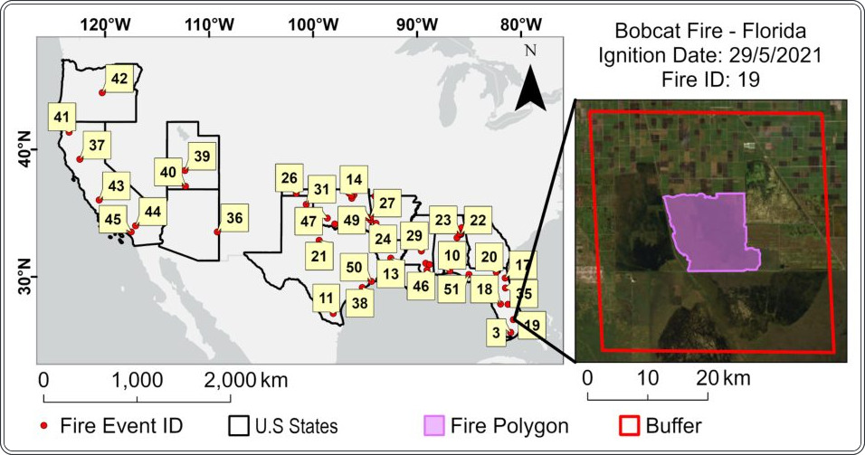

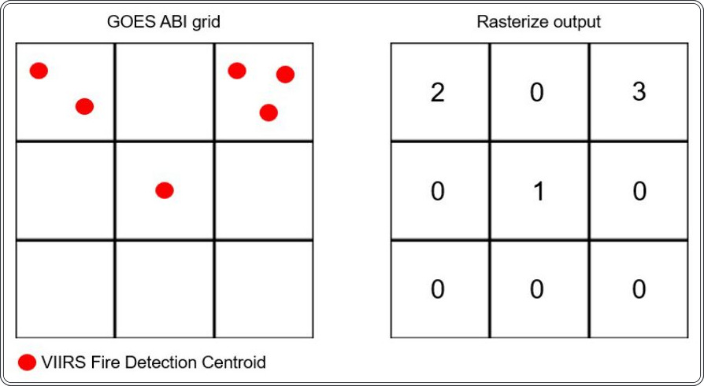

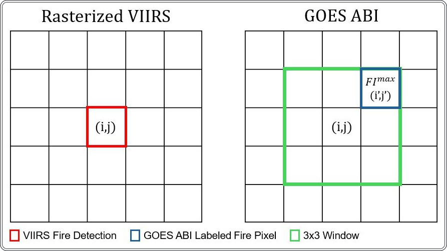
Суреттің толық сипаттамасы
4-сурет: Өртті белгілеу процесінің иллюстрациясы. Сол жақта: VIIRS өртті анықтау дерегі (i, j) пикселінде, растрленген VIIRS V матрицасында. Оң жақта: 3 × 3 өлшемді терезе GOES MCMI G матрицасына қолданылады. Ең жоғары FI мәні бар G(i′, j′) пикселі өрт деп белгіленеді.

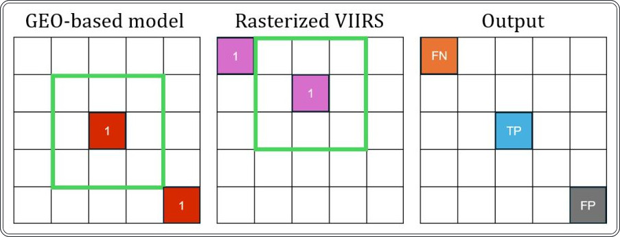

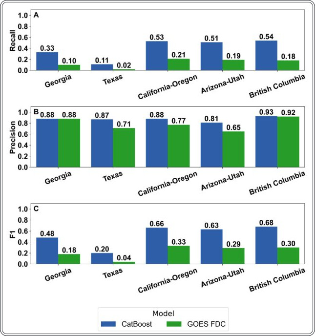

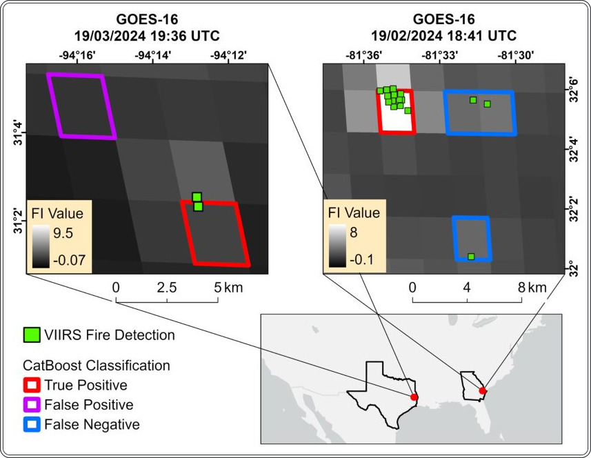

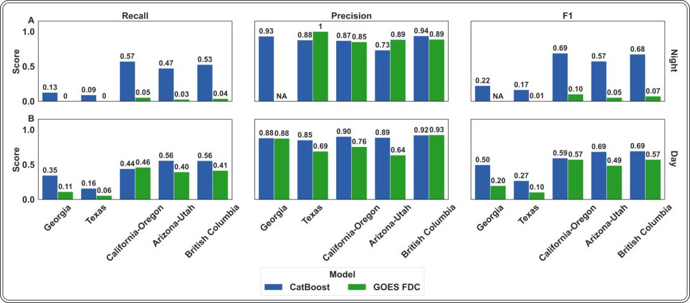

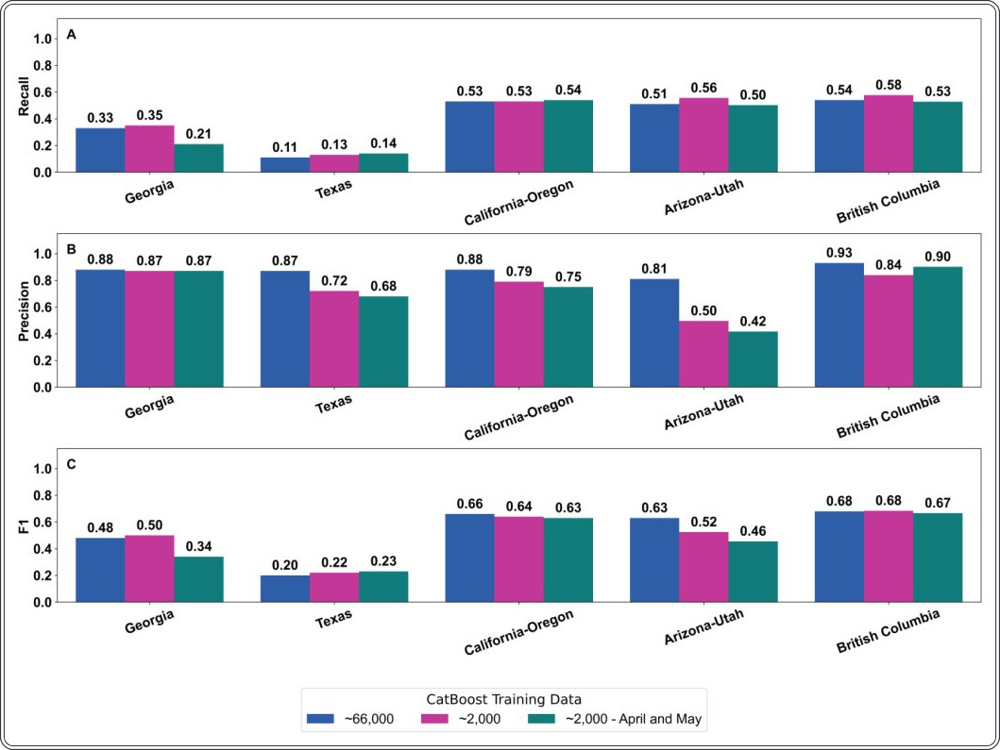

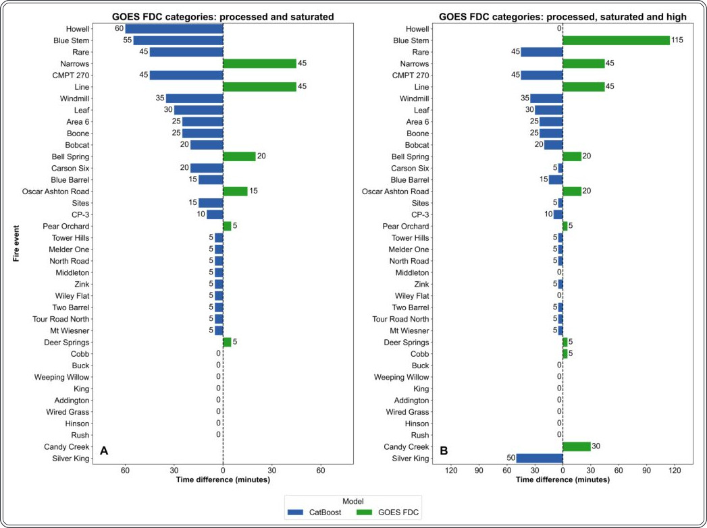

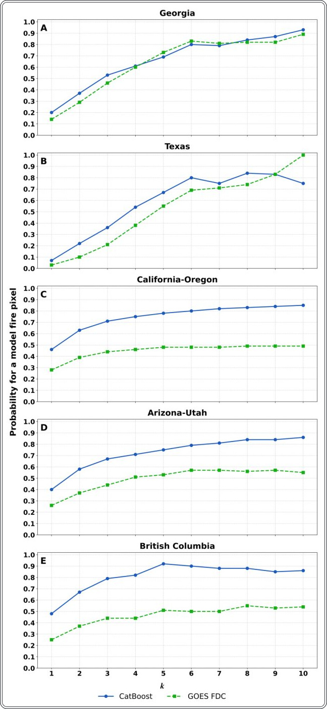

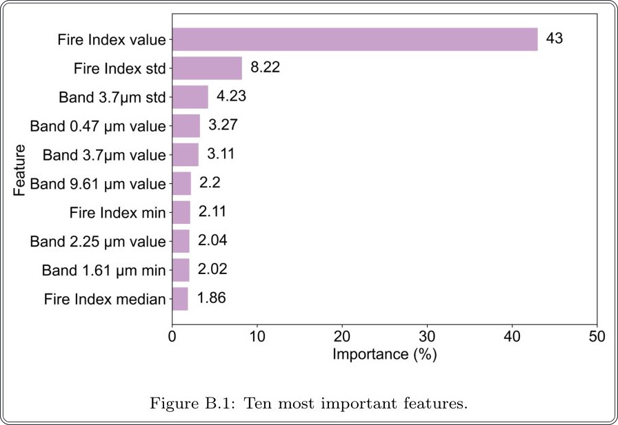
Зерттеу сызбасы
Препринт әлі рецензиядан өтпеген. Қорытындылар алдын ала.
Дереккөз
| Дереккөз | Санат | Препринт лицензиясы |
|---|---|---|
| arXiv | env_data | arxiv |
Дереккөздер
| Дереккөз | Сілтеме |
|---|---|
| Страница препринта | arxiv.org |
| Полный текст (PDF) | arxiv.org |
| DOI | doi.org |
| Метаданные Crossref | api.crossref.org |
| Europe PMC | europepmc.org |